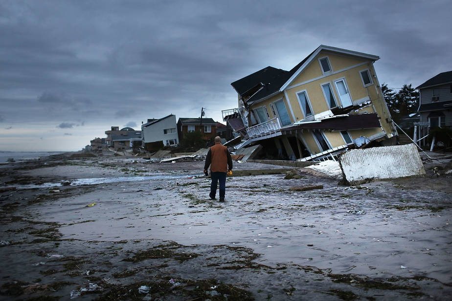
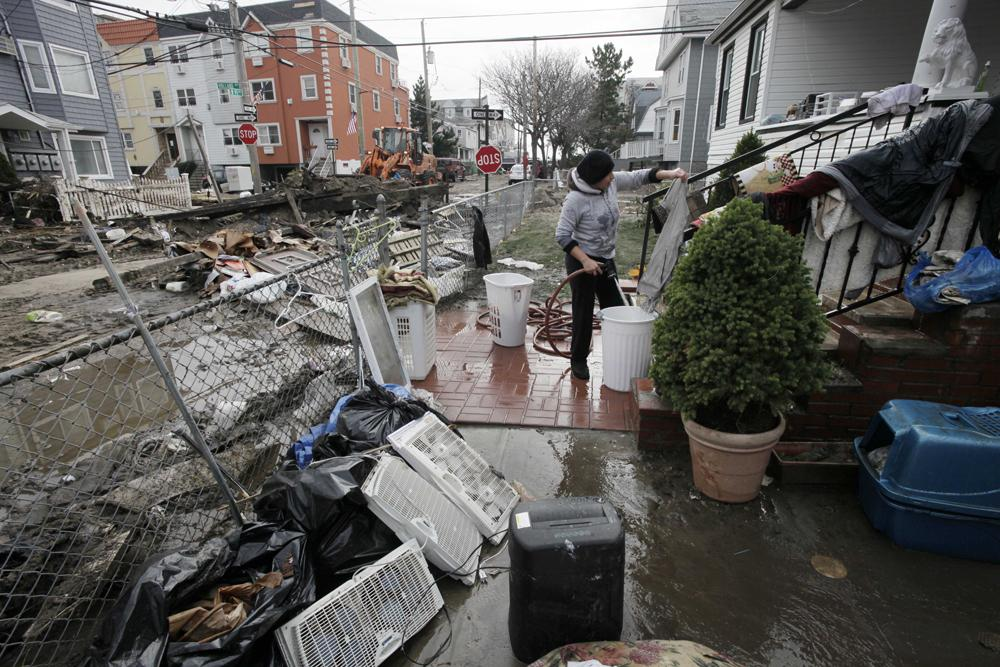

Storm Risk and Environmental Hazards in NYC
New York City is vulnerable to coastal storms, including nor'easters, tropical storms and hurricanes. As part of the city's diaster managment planning, designated hurricane evacuation zones have been established to identify areas likely to be inundated by storm surge.
Residents living in evacuation zones face risks not only from coastal storms themselves, but also from long-term environmental and public health hazards associated with flooding in these areas. Much of this is linked to the long history of manufacturing and industrial enterprises in New York. These risks will be explored in this map.Storm flooding in NYC



Significant Maritime and Industrial Areas (SMIAs)
In order to help preserve the maritime industry and water dependent industry uses that still exist, the Plan also designates 6 areas as Significant Maritime Industrial Areas (SMIA).
These districts were previously zoned for heavy manufacturing and will continue to be used for industry. The designated SMIA’s include: Kill Van Kull between Staten Island and Bayonne Sunset Park in Brooklyn Red Hook in Brooklyn Brooklyn Navy Yard in Brooklyn Newtown Creek in Brooklyn and Queens South Bronx in the Bronx